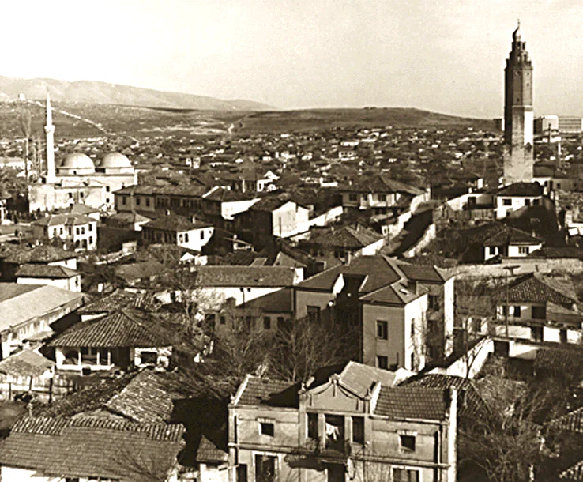
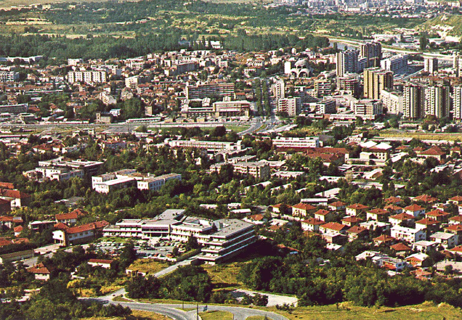

Площадь
- Сценарий
- Димитрие Османли, Симон Дракул
- Камера
- Киро Билбиловски
- Год
- 1964
- Продолжительность
- 00:06

Вид на город с Часовой башней справа и мечетью Гази Иса-бея слева, с кварталом «Саат-Кула». (1940-е)

Бетонный мост у нынешней гостиницы «Гранд». На заднем плане видна Скопская крепость - Кале. (1950-е)

Панорама Скопье. (1950-е)

Панорама Скопье. На переднем плане бетонный мост (у нынешнего Гранд-отеля), а на заднем - Каменный мост и здания Офицерского дома и Народного банка. Справа вверху видна Скопская крепость - Кале. Набережная обустроена как прогулочная зона и проезжая часть с зеленью между ними. (1950-е)

Вид на бетонный мост (у нынешнего Гранд-отеля). На переднем плане Пайко-махала. На заднем плане Скопская крепость - Кале, а справа от неё мечеть Мустафы-паши. (1950-е)

Скопье, 1950-е, с новыми жилыми домами. В центре - место нынешнего Зелёного рынка.

Панорама города Скопье. На переднем плане площадь Свободы. Улица к реке Вардар - «Васил Главинов». На первом углу площади виден вход в начальную школу «Гоце Делчев». - 1950-е

Площадь «Слобода». На заднем плане видны Офицерский дом и Народный банк. - 1950-е

Центр Скопье до землетрясения - около 1960 года.

Панорамный аэрофотоснимок центрального района Скопье. Площадь с Офицерским домом, Народным банком и Хозяйственно-торговой палатой. Справа главный почтамт, а слева внизу видна крыша Народного театра. Снимок сделан в 1950-е годы.

Панорамный снимок центральной части Скопье, - 1950-е

Аэрофотоснимок центрального района до землетрясения - 1963 год. Между башнями (вверху справа), где сегодня торговый центр, видна церковь «Царя Константина и Царицы Елены».

Панорама части старой скопской чаршии, 1950-е.

Вид на часть Бит-пазара и старую чаршию. Над ними видна мечеть Мустафы-паши. (1950-е)

Вид на центр Скопье. Каменный мост всё ещё используется для движения. Снимок сделан вскоре после катастрофического землетрясения 26 июля 1963 года.

Скопье в 1968 году. Место нынешнего городского торгового центра.

Панорамный снимок центра города. Площадь всё ещё используется как стоянка для автомобилей.
(1960-е)

Панорама центральной части города с регулированием русла Вардара, снимок со Скопской крепости - Кале. (1970-е). На переднем плане Каменный мост, универмаг «Пелистер» и другие здания.

Вид со Скопской крепости - Кале на центр Скопье. Набережная на правом берегу Вардара полна людей. (1970-е)

Вид со Скопской крепости - Кале на центр Скопье. (1970-е)

Вид на левый берег Вардара у самого Каменного моста. В нижней части снимка видна часть церкви Св. Димитрия. (1970-е)

Вид на левый берег Вардара у самого Каменного моста. В нижней части снимка видна часть церкви Св. Димитрия. (1980-е)

Панорама Скопье. На переднем плане маленький парк «Женщина-борец». Внизу слева видна часть здания Городской больницы и часть здания Собрания. - 1980-е.

Парк «Женщина-борец» с Городским торговым центром, жилыми и общественными зданиями Скопье. - 1980-е.

Вид на бульвар и мост «Гоце Делчев» с эстакадой на переднем плане. На заднем плане Телекоммуникационный центр и часть жилого комплекса «Градски зид». (1980-е)

Вид на центральный городской район. На переднем плане часть банков, мост «Революция» и театр. На заднем плане видны Бетонный мост, Каменный мост и Телекоммуникационный центр - 1980-е.

Вид на центральный городской район с крыши нынешнего Института финансов. Вдали виден каменный мост. Справа на открытке нынешний театр, а над ним угадывается Скопская крепость - Кале - 1980-е.

Скопье в конце 1970-х. Мост у нынешней гостиницы «Гранд». Слева возвышается здание Македонского радио и телевидения, справа - здание нынешнего Института платёжного оборота.

Панорама Скопье со склона горы Водно. На переднем плане гостиница «Панорама». (1980-е)

Панорама ночного Скопье со склонов горы Водно. (1980-е)

 Акведук4 открытки
Акведук4 открытки Кале30 открыток
Кале30 открыток Мосты60 открыток
Мосты60 открыток Набережная58 открыток
Набережная58 открыток Площадь46 открыток
Площадь46 открыток Здания66 открыток
Здания66 открыток Христианские храмы19 открыток
Христианские храмы19 открыток Мусульманские здания33 открытки
Мусульманские здания33 открытки Офицерский дом29 открыток
Офицерский дом29 открыток Театр28 открыток
Театр28 открыток Железнодорожный вокзал13 открыток
Железнодорожный вокзал13 открыток Школы36 открыток
Школы36 открыток Парки12 открыток
Парки12 открыток Рынки18 открыток
Рынки18 открыток Улицы38 открыток
Улицы38 открыток Панорама I60 открыток
Панорама I60 открыток Панорама II30 открыток
Панорама II30 открыток Коллажи55 открыток
Коллажи55 открыток Наводнения9 открыток
Наводнения9 открыток Землетрясение27 открыток
Землетрясение27 открыток Скопье 200026 открыток
Скопье 200026 открыток